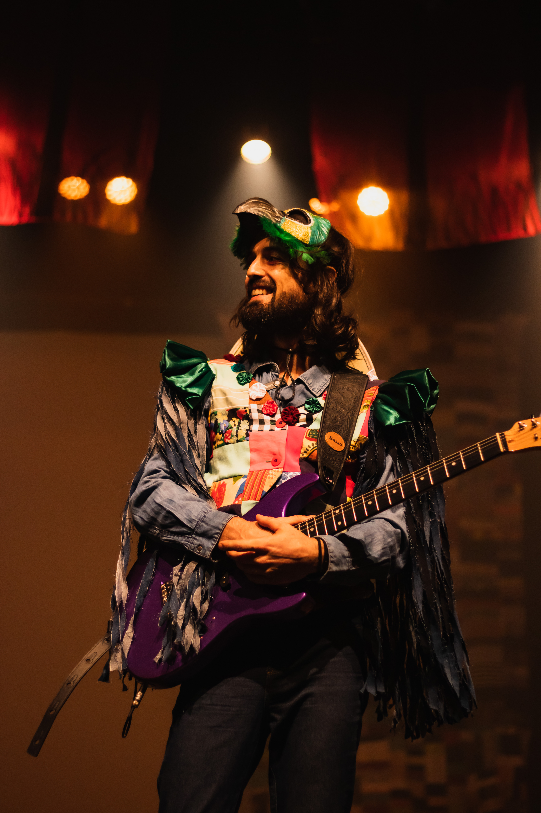
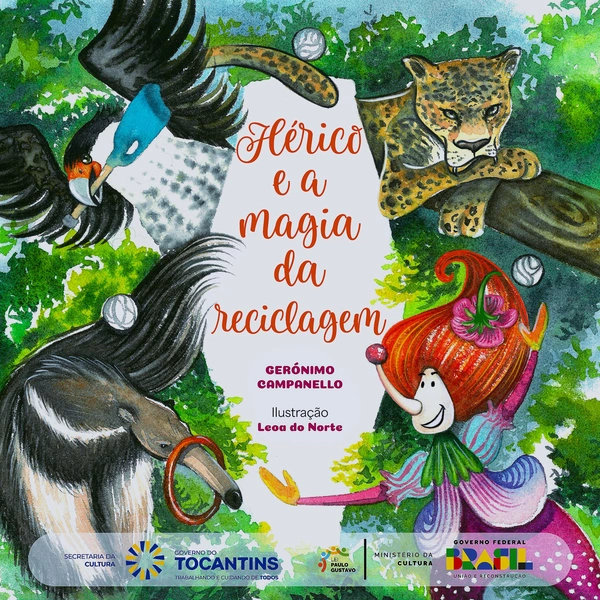
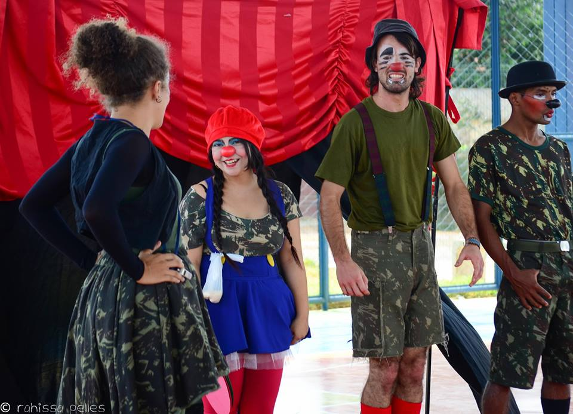
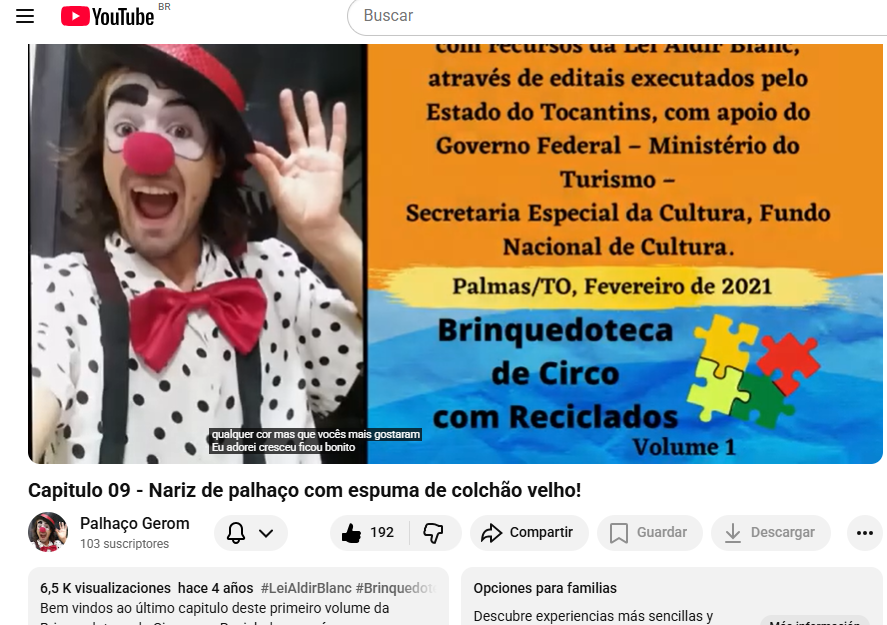

🎪 Além das ferramentas: minha vida artística
O técnico que também é artista (e vice-versa)
Fora do mundo da refrigeração e dos códigos, existo no picadeiro, na música e na criação cultural. Hoje atuo de forma mais tranquila no meio artístico, mas carrego comigo todas as experiências que vivi nos palcos e projetos colaborativos.

Artista circense
Já dividi o picadeiro com grandes talentos e desenvolvi meu próprio olhar sobre o circo. Hoje estou quase inativo, mas vez ou outra ainda aceito um convite especial para me apresentar. O equilíbrio dos malabares continua vivo na memória do corpo.
"O mesmo equilíbrio que uso nos malabares, aplico nos reparos"

Músico compositor
Toco diversos instrumentos - cada um deles um convite para novas aventuras sonoras. Componho, crio melodias e dou vida a projetos autorais e colaborativos. A paixão pela música me move e me completa.

Livro artístico "Hérico e a Magia da Reciclagem"
Uma parceria especial com uma ilustradora talentosa e maravilhosa, a Leoa do Norte. Criei os textos e ela deu vida com ilustrações únicas. O resultado? Um livro digital criativo, disponível gratuitamente para quem quiser conhecer.

Espetáculos autorais e colaborações
Desenvolvi meus próprios espetáculos e também colaborei com criações de outros artistas. Cada projeto foi uma oportunidade de unir linguagens e experimentar novas formas de expressão.
- 🎪 Espetáculo solo: "Gerom o Palhaço Equilibrista" (2021)
- 🤝 Participações em montagens de outros artistas
- ✨ Criações coletivas e intervenções urbanas

Projetos culturais
🎭 O circo também recicla Desenvolvo projetos onde a arte encontra a sustentabilidade. Destaque para oficinas que transformaram plásticos e pets em objetos circenses, gerando uma coleção de vídeos no YouTube e uma apostila. Porque a arte também pode salvar o planeta.
🎥 Playlist: Brinquedoteca de Circo com Reciclados (2021)Hoje a arte vive em mim de forma mais tranquila, como uma velha amiga que aparece sem avisar. Seja num texto, numa melodia ou num convite inesperado para um malabares. E quem sabe um dia esses dois mundos não se encontrem num grande projeto?
— Gerónimo, o Dr. Eletron
🎪 Quer conversar sobre arte, projetos culturais ou parcerias?
Mesmo quase inativo, adoro trocar ideias e quem sabe construir algo novo.
👉 Vamos conversar